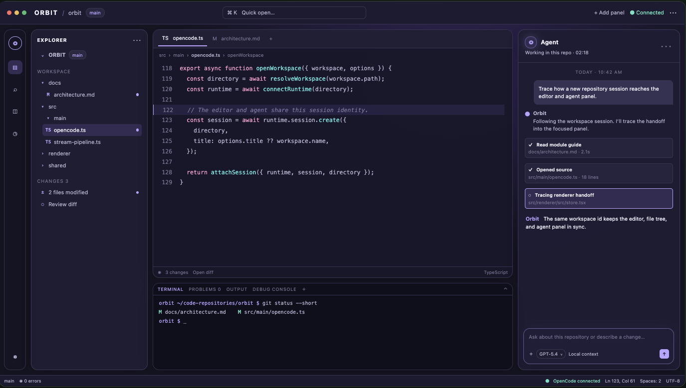

Scan sessions together
Show the task and a concise progress summary for each session so the overview stays readable as work expands.
02 / Parallel work direction
Agent mode turns the workspace into a shared overview for parallel coding sessions. Follow progress, choose where to focus, and keep the path back to code short.

The direction · up to eight
Agent mode is a current Orbit view, and the multi-panel capacity is still being worked on. This page shows the product direction without pretending the current app already renders this grid.
08
agent panels in the concept
Divide a larger task into investigations you can follow independently. The goal is to see which sessions are moving, which need attention, and which result is ready for review.
Design goals
The control surface should answer three quick questions: what is each agent doing, where is it working, and how do I inspect the result?
Show the task and a concise progress summary for each session so the overview stays readable as work expands.
Select an agent to bring its transcript, active workspace, and relevant file into the primary work area.
Keep the existing Changes and diff workflow close so a finished task moves naturally into code review.
Make waiting sessions, permission requests, and follow-up questions visible without burying the working agent.
Keep the path, session identity, and terminal association clear while moving between parallel tasks.
Leave the broad overview and return to a focused Monaco-plus-agent layout when the next step needs attention to detail.
A possible task split
The labels below are example ways to divide a repository task. They describe the concept and are not sessions shown in the app screenshot.
Follow a user action through renderer state, IPC, and runtime traffic.
Identify existing coverage and the key gaps around a requested change.
Connect the component behavior to its state owner and style rules.
Review the types and preload surface that keep process boundaries aligned.
Check event ownership and the session transcript projection.
Inspect the workspace diff and identify which files need attention.
Find the canonical module guidance for the affected behavior.
Bring the independent findings back together for a clear next step.
Built from today’s app
The current Orbit app already has an Agent mode layout and can add model panels. The captured screen shows that existing workbench state: a repository, Monaco editor, and live agent panel. The expanded eight-panel view is the next design step.
Common questions
A parallel overview should make the product’s current behavior and its next step easy to tell apart.
No. Up to eight panels is the design direction and is still in progress. The supplied screenshot shows the workbench with one agent panel.
The concept keeps every panel tied to its own session and workspace context. Exact panel and workspace behavior remains part of the design work.
That is a core design goal: choose a panel and return to its conversation, code, and changes without losing the wider overview.
Orbit currently supports the Monaco workbench, repository-aware agent panel, session streaming, Changes and diff review, terminal, and Agent mode. The maximum of eight panels is the developing part.
See the focused editor and agent experience this direction grows from.